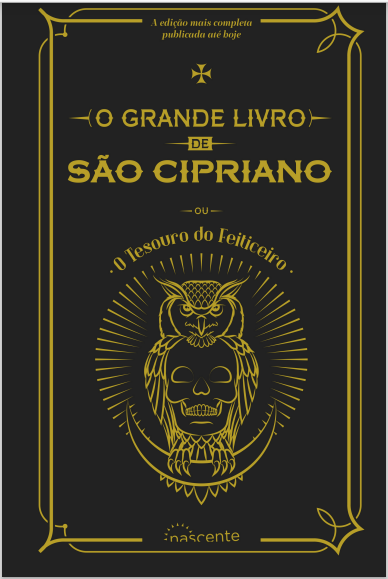

São Cipriano
Descrição do livro
São muitas as edições que se publicaram do Livro de São Cipriano, e todas elas, ao que parece, têm sido bem acolhidas pelo público. Todas essas edições, porém, são divididas em DOIS VOLUMES, ou duas partes, e não está por conseguinte nenhuma delas completa. A obra que damos a público, sob o título de O Grande Livro de São Cipriano ou Tesouro do Feiticeiro, consta de TRÊS VOLUMES, ou três partes distintas, a saber:
Baixar Livro